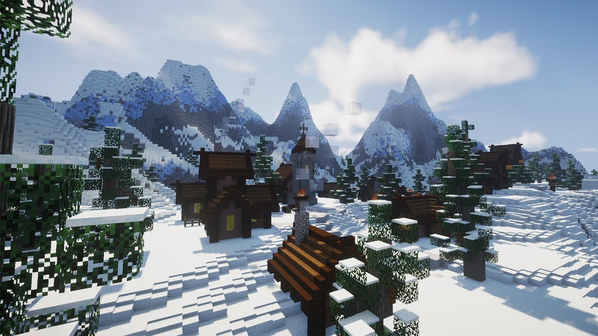

Diferente de biomas mais planos como as Snowy Plains ou a Snowy Taiga, as Snowy Slopes não possuem a geração natural de vilas no Minecraft. Esse bioma, introduzido na atualização 1.18, é composto por encostas íngremes e cobertas de neve que servem principalmente como transição para os picos das montanhas. Embora você não encontre aldeões ou casas nessas subidas, é muito comum se deparar com postos avançados de saqueadores (Pillager Outposts) e, em casos raros, iglus que surgem nas bordas de encontro com outros biomas.
A vida animal nesse local é focada quase exclusivamente nas cabras, que são os únicos mobs passivos que aparecem naturalmente por lá. Durante a exploração, o maior perigo não são as quedas, mas sim a neve fofa (Powder Snow), que pode fazer o jogador afundar e sofrer dano por congelamento caso não esteja usando botas de couro. Portanto, se o seu objetivo é encontrar uma vila para trocas ou moradia, o ideal é buscar pelas planícies nevadas que geralmente cercam a base dessas montanhas, onde o terreno é mais estável e favorável para a vida dos aldeões.
Recursos Disponíveis
- Neve e gelo: úteis para construção e decoração.
- Minérios: como ferro, carvão e, em níveis mais baixos, outros minérios comuns.
- Cabras: fornecem itens como chifres (usados para criar sons especiais).
Vantagens do Bioma
- Excelente para construções temáticas (vilas nevadas, castelos, bases secretas).
- Boa visibilidade em áreas abertas.
- Presença de cabras, exclusivas de regiões montanhosas.
Desafios e Desvantagens
- Dificuldade de locomoção: terreno íngreme e escorregadio.
- Quedas perigosas: risco alto devido à altitude.
- Escassez de recursos naturais imediatos: poucas árvores e alimentos.
- Spawn de mobs hostis: especialmente durante a noite.
Dicas de Sobrevivência
- Leve botas com encantamento de queda suave para evitar dano.
- Construa abrigos rapidamente para se proteger de mobs e do ambiente.
- Use blocos como escadas ou trilhos para facilitar a movimentação.
- Sempre carregue comida suficiente, já que há poucos recursos naturais.